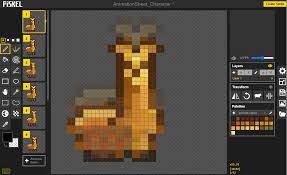
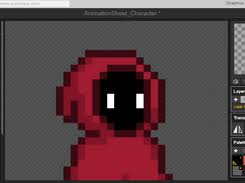
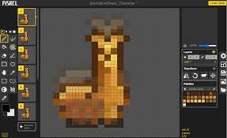
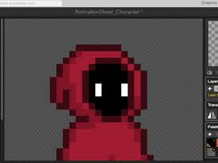

Descrição
é um editor de pixel art e sprites animados, gratuito e de código aberto, que funciona diretamente no navegador da web. Ele também possui versões para desktop em sistemas operacionais como Windows, Linux e macOS. A ferramenta é bastante popular entre iniciantes e artistas experientes pela sua facilidade de uso.
Principais caracteristicas:
Editor online:
Funciona no navegador, sem a necessidade de instalação, o que o torna acessível em qualquer dispositivo, incluindo tablets e celulares (com melhor experiência em desktop).
Criação de animações:
Permite criar animações quadro a quadro, funcionando de maneira semelhante a um stop motion. A visualização da animação acontece em tempo real, enquanto o usuário desenha.
Ferramentas simples e intuitivas:
Oferece ferramentas essenciais para a criação de pixel art, como:
- Lápis e borracha: Para desenhar e apagar.
- Balde de tinta: Para preencher áreas com cor.
- Espelho vertical: Para desenhar de forma simétrica.
Camadas:
Possibilita o uso de camadas, o que facilita o trabalho e a organização de elementos na criação de sprites e cenários.
Exportação:
Permite exportar as criações em diferentes formatos.